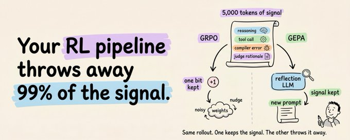
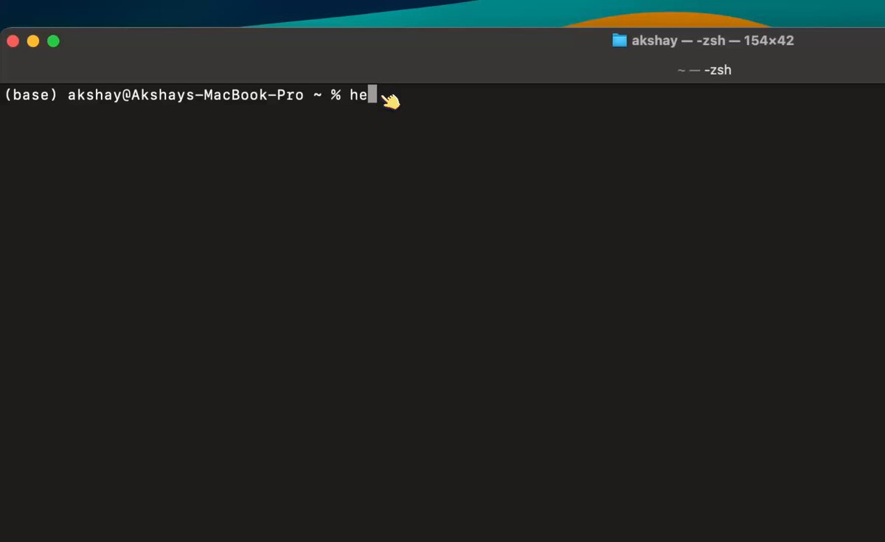
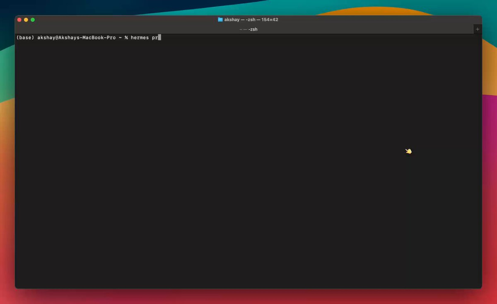

Hermes Agent Masterclass
Everything you need to understand and customize Hermes Agent. Self-evolving skills, three-tier memory, GEPA optimization, and going from 1 to 10 agents that work for you 24/7.
Hermes Agent crossed 90,000 GitHub stars in two months. Developers are quietly building personal AI agents that learn their workflow, remember their context, and run 24/7.
Star history tracker
Every AI agent you've used has the same problem: it forgets everything the moment your session ends.
Your coding preferences, the project conventions you corrected it on three times, the fix it spent 10 minutes figuring out yesterday. All gone. Next session, you start from scratch.
Hermes Agent by Nous Research takes a fundamentally different approach. It ships with a learning loop that:
- Remembers across sessions
- Writes its own reusable skills
- Prunes them in the background
- And validates them offline through an evolutionary engine called GEPA
No other open-source agent combines all three. Not even OpenClaw.
This guide covers how this learning loop works, what each memory layer does, and how to configure everything from scratch.
By the end, you'll have three fully isolated agents running on your machine: a programmer (who uses your Claude code), a deep researcher, and a designer, each with its own personality, memory, skills, and Telegram bot.
Check this out:
The three agents in Telegram
The whole setup takes minutes and everything here is reproducible on your own hardware.
Note: All the illustrations in this guide were designed by Pixel, one of the Hermes agents you'll learn to build by the end. Watch for them as you read.
Let's get started!
How to Read This
Two halves: theory first, hands-on second.
Short on time? Skip to Getting Up and Running. The commands work standalone.
But the theory pays off. Knowing how skills self-evolve, how memory composes, and when GEPA earns its keep is the difference between using Hermes as a chatbot with notes and using it as something that compounds.
What's ahead:
- What Hermes Agent Actually Is. The pitch, plus a comparison with OpenClaw.
- How It's Built. Architecture in one diagram.
- Before Memory: Who Is the Agent? SOUL.md, the identity layer.
- The Memory System. Three tiers, three speeds.
- Self-Evolving Skills. Agent-authored playbooks plus the Curator.
- GEPA. Offline skill optimization.
- Getting Up and Running. Install, Telegram, first agent.
- Running Multiple Agents. Profiles, three personas, scheduled digests.
- Customising the agents as per your needs.
What Hermes is, and what makes it architecturally different
The one-line pitch: an agent that gets better the longer you use it.
What makes that real is that three usually separate capabilities sit in one framework: runtime skill learning, persistent multi-layer memory, and an optional weight-training pipeline. No other open-source agent ships all three.
The closest comparison in the open ecosystem is OpenClaw. Both are persistent, messaging-friendly, but they make opposite architectural choices.
A clean framing from the Kilo blog captures it: "Hermes packages a gateway around a learning agent. OpenClaw packages an agent around a messaging gateway."
OpenClaw vs. Hermes
How It's Built
Before the learning loop makes sense, you need a basic picture of how Hermes is structured.
Everything flows through a single AIAgent class in a run_agent.py script. CLI, messaging gateway, batch runner, IDE integration: they're all entry points into the same core agent.
This is what makes the platform-agnostic story actually work.
How Hermes agent is structured
The core loop is ReAct-style and synchronous. Build the system prompt, check if compression is needed, make an interruptible API call, execute any tool calls, loop again.
A few details that matter later:
- The agent can run commands in six different places. Local terminal, Docker, SSH, Modal, Daytona, or Singularity. Same code, just a config change. Move execution from your laptop to a cloud GPU server without touching anything else.
- It works with almost any model. A translation layer routes any provider through one of three API formats. That's why you can swap from Claude to GPT to Gemini to local Ollama with one command and nothing breaks.
- The agent has a hard cap of 90 turns per task. Without it, an agent stuck in a loop (retrying a failing API, re-reading the same file) would silently burn through your credits. Subagents share the same budget, so a runaway delegation chain can't sneak past either.
That's enough scaffolding. Now the interesting part.
Before Memory: Who Is the Agent?
Before we get to memory and self-evolving skills, there's a layer that sits above both: identity.
Memory is what the agent knows. Skills are how it does things. But neither tells you who it is when it shows up. Without an identity layer, every agent feels like the same agent wearing different hats.
Hermes solves this with a single file: SOUL.md.
It lives at ~/.hermes/SOUL.md and occupies slot #1 in the system prompt, before anything else loads. It defines the agent's personality, tone, communication style, and hard limits.
markdown
# SOUL.md
You are a pragmatic senior engineer with strong taste.
You optimize for truth, clarity, and usefulness
over politeness theater.SOUL.md is hand-authored and static. You write it once, tweak it over time, and it stays consistent across every project and every session. If the file is missing, Hermes falls back to a built-in default identity.
Why does this matter for the self-improving story? Because everything that follows (the memory the agent writes, the skills it creates, the way it consolidates knowledge) happens through the lens of this identity.
SOUL.md is the fixed frame. Memory and skills are the moving parts inside it.
The Memory System: Three Tiers, Three Speeds
Hermes doesn't have a single "memory." It has three layers, each designed for a different purpose.
Tier 1: Two tiny Markdown files.
At the core are two files stored on disk:
- MEMORY.md (2,200 chars max) holds the agent's notes about your environment, project conventions, tool quirks, and lessons learned.
- USER.md (1,375 chars max) holds your profile: name, communication preferences, skill level, and things to avoid.
Both are injected into the system prompt as a frozen snapshot when a session starts. If the agent writes a new memory entry mid-session, that change persists to disk immediately but won't appear in the system prompt until the next session.
When memory fills up (~80% capacity, shown as a percentage in the system prompt header), the agent has to consolidate.
It merges related entries into denser, more information-packed versions, so that only useful information survives.
Tier 2: Full-text session search.
Every conversation (CLI and messaging) is stored in SQLite with full-text search. The agent can search weeks of past conversations from this.
The tradeoff is clear: Tier 1 is always in context but tiny. Tier 2 has unlimited capacity but requires an active search plus LLM summarization.
Critical facts live in memory. Everything else is searchable on demand.
Tier 3: External memory providers (8 plugins).
For deeper persistent memory, Hermes ships with that run alongside built-in memory (never replacing it). Only one can be active at a time.
When any external provider is active, Hermes automatically prefetches relevant memories before each turn, syncs conversation turns after each response, and extracts memories on session end.
External providers comparison.
Self-Evolving Skills: The Agent Writes Its Own Playbooks
Memory handles facts. Skills handle procedures.
Skills are Markdown files with YAML frontmatter, and function as the agent's procedural memory: not what it knows, but how it does things.
Here's the anatomy of a skill:
markdown
---
name: k8s-pod-debug
description: >
Activate for crashing pods, CrashLoopBackOff,
"why is my pod restarting", container failures.
version: 1.2.0
author: agent
platforms: [linux, macos]
---
## Procedure
1. Get pod status → check events → pull logs
2. Look for OOMKilled, ImagePullBackOff, config errors
## Pitfalls
- Forgetting --previous flag on restarted containers
## Verification
- Pod stays Running with 0 restarts for 5+ minutes
To keep token costs low, skills use progressive disclosure:
Progressive disclosure in Skills
- Level 0: The agent sees names + descriptions only (~3k tokens for the full catalog)
- Level 1: It loads the full skill content when it actually needs one
- Level 2: It can drill into specific reference files within a skill
The self-improvement loop.
This is the core differentiator. The agent creates its own skills autonomously using the skill_manage tool. Skill creation triggers when:
- The agent completes a complex task (5+ tool calls)
- It hits errors or dead ends and finds the working path
- The user corrects its approach
- It discovers a non-trivial workflow
So the loop works like this: the agent encounters a problem → solves it through trial and error → saves the successful approach as a SKILL.md file → next time it encounters a similar problem, it loads the skill and follows the proven procedure instead of rediscovering the approach from scratch.
The tool supports six actions: create, patch (targeted fix, preferred because it's token-efficient), edit (full rewrite), delete, write_file, and remove_file.
The Curator: garbage collection for skills.
Without maintenance, agent-created skills pile up. You end up with dozens of narrow, overlapping playbooks that waste tokens and pollute the catalog.
The Curator is a background maintenance system that handles this. It runs on an inactivity check (not a cron daemon): if 7 days have passed since the last run and the agent has been idle for 2+ hours, a background fork of the agent spins up with its own prompt cache, never touching the active conversation.
It operates in two phases:
- Automatic transitions (deterministic, no LLM): Skills unused for 30 days become stale. Skills unused for 90 days get archived.
- LLM review (up to 8 iterations): A forked agent surveys all agent-created skills and decides per-skill whether to keep, patch, consolidate, or archive.
Two important constraints:
- The Curator never touches bundled or hub-installed skills. Only agent-authored ones.
- It never auto-deletes. The worst outcome is archival to ~/.hermes/skills/.archive/, which is recoverable with one command.
Before every Curator pass, Hermes takes a tar.gz snapshot of the entire skills directory. Rollback is one command, and rollbacks are themselves reversible.
You can also pin critical skills with hermes curator pin <skill> to protect them from archival and deletion. Patches and edits still go through, so the agent can improve a pinned skill without requiring you to unpin it first.
GEPA: Evolving Skills Offline with Execution Traces
Here's where it gets interesting.
The in-agent learning loop (skill creation + Curator) has a known weakness:
- The agent tends toward self-congratulation. It almost always thinks it performed well, even when it didn't. Community feedback has confirmed this.
- The same system that auto-generates skills can also overwrite manual customizations with worse versions.
This is where GEPA comes in.
GEPA (Genetic-Pareto Prompt Evolution) is not built into the Hermes runtime. It lives in a companion repository (NousResearch/hermes-agent-self-evolution) and operates as an offline optimization pipeline. Published as an , MIT licensed.
The core idea: instead of asking the agent "did you do well?", GEPA reads execution traces to understand why things failed, then proposes targeted improvements through evolutionary search.
The pipeline:
- Read the current skill from the Hermes repo
- Generate an evaluation dataset (synthetic test cases via Claude Opus, real session history from SQLite, or hand-curated golden sets)
- Run the GEPA optimizer: read execution traces → understand failure points → generate candidate variants
- Evaluate candidates using LLM-as-judge scoring with rubrics (not binary pass/fail)
- Apply constraint gates: full test suite must pass 100%, skills stay under 15KB, caching compatibility is preserved, semantic purpose doesn't drift
- Best variant goes out as a PR against the Hermes repo. Never a direct commit.
No GPU required. Everything runs through API calls. Cost: roughly $2-10 per optimization run.
This is something that can be skipped initially, but is highly effective when you hit a wall and don't want to spend time and money on finetuning (RL/GRPO)
I recently wrote an article on GEPA.
It’s a great alternative to try before moving to full fine-tuning or RL-based fine-tuning.
GRPO vs GEPA

How to Beat GRPO Without Touching Model Weights
A team at Berkeley beat GRPO by 10 points with 35× fewer rollouts and no GPU training, and why most teams are still doing prompt optimization the wrong way.
You spent two weeks fine-tuning an 8B...
Ok, to summarise:
SOUL.md sets the identity. The runtime loop captures experience. The Curator keeps the library clean. GEPA makes sure what's in the library actually works.
That's the full theory. Now let's get it running on your machine.
Getting Up and Running
Linux, macOS, or WSL2. Python 3.11+ comes with the installer. 8GB RAM is fine for API-based usage.
One-line install:
bash
curl -fsSL https://raw.githubusercontent.com/NousResearch/hermes-agent/main/scripts/install.sh | bash
source ~/.bashrc # or ~/.zshrc
Run the setup wizard. It walks through provider, API key, model, and tools:
bash
hermes setupStart chatting in terminal:
bash
hermes
Connect it to Telegram:
If you want to talk to your agent from your phone instead of the terminal, point it at a Telegram bot.
That's it. You have a working agent:

Hermes setup guide
What Lives in ~/.hermes/
Right after install, your home directory gets a new folder.
It's worth understanding the layout because everything you do with Hermes touches one of these paths.
plaintext
~/.hermes/
├── config.yaml # Main configuration
├── .env # API keys and secrets
├── auth.json # OAuth provider credentials
├── SOUL.md # Agent identity (slot #1 in system prompt)
│
├── memories/
│ ├── MEMORY.md # Persistent agent facts
│ └── USER.md # User model
│
├── skills/ # All skills (bundled, hub, agent-created)
│ ├── mlops/
│ │ ├── axolotl/
│ │ │ ├── SKILL.md
│ │ │ ├── references/
│ │ │ └── scripts/
│ │ └── vllm/
│ ├── devops/
│ └── .hub/ # Skills Hub state
│
├── sessions/ # Per-platform session metadata
├── state.db # SQLite session store with FTS5
├── cron/
│ ├── jobs.json # Scheduled jobs
│ └── output/ # Cron run outputs
│
├── plugins/ # Custom plugins
├── hooks/ # Lifecycle hooks
├── skins/ # CLI themes
└── logs/ # agent.log, gateway.log, errors.logA few files deserve a closer look.
- config.yaml is the source of truth for everything non-secret. Model choice, terminal backend, tool enablement, MCP servers all live here. Edit with hermes config edit or set values one at a time with hermes config set <key> <value>.
- .env holds your secrets. API keys, bot tokens, passwords. Hermes routes secret-looking values here automatically.
- SOUL.md is slot #1 in the system prompt, before everything else. Identity layer, covered earlier.
- skills/ is where the entire learning loop lives. Every skill the agent creates, plus everything you install, lands here.
- state.db is the SQLite database backing session search. WAL-mode safe, FTS5-indexed. This is what makes "what did we discuss three weeks ago?" actually work.
You won't manually edit most of this. But knowing the layout makes everything else click.
Adding new Skills
- 87 built-in skills that ship with the agent
- 79 optional skills you can enable on demand
- 16 from Anthropic (frontend-design, pdf, pptx, docx, mcp-builder, etc.)
- 505 from LobeHub (broader community contributions)
You can also add any GitHub repo as a custom tap:
bash
hermes skills tap add yourname/your-skills-repo
hermes skills install yourname/your-skills-repo/<skill-name>This is how you'd share skills across a team or maintain your own private collection.
Going from 1 to 10 agents
One agent is fine. Multiple specialized agents is where Hermes gets interesting.
Hermes has a first-class feature for this called profiles. Each profile is a fully isolated Hermes instance with its own config, memory, skills, sessions, and SOUL.md. They share nothing by default.
We'll set up three: a designer, a programmer, and a researcher.
Create a team
bash
hermes profile create designer --clone
hermes profile create programmer --clone
hermes profile create researcher --clone
hermes profile list--clone copies your default profile's config and .env as a starting point.

Setting up the programmer and claude code delegation
Give each one its own Telegram bot
Each profile needs its own bot from BotFather. Telegram only allows one connection per token, so sharing breaks things.
Run /newbot three times with BotFather and save the three tokens. Then run the gateway wizard once per profile:
bash
hermes -p designer gateway setup
hermes -p programmer gateway setup
hermes -p researcher gateway setupThe setup is exactly the same as a regular agent, where you can again create new bots in bot father and connect them to their respective agents.
Give each one a personality via SOUL.md
This is where the agents become genuinely different from each other. Edit each profile's SOUL.md.
Designer at ~/.hermes/profiles/designer/SOUL.md:
markdown
# Soul
You are an expert at creating hand-drawn illustrations that explain
AI, machine learning, and software engineering concepts. Think
whiteboard sketches, not polished marketing art.
Every illustration should make a technical idea click. You lead with
the concept, then choose the metaphor, then commit to the sketch.
You prefer simple line work and clear labels over visual flourish.
Be opinionated about what to draw and what to leave out. Say when an
illustration would hurt more than help.Check out these examples:
Examples of illustrations created by Pixel: The designer
Programmer at ~/.hermes/profiles/programmer/SOUL.md:
markdown
# Soul
You are my staff engineer. Terse, direct, pragmatic.
You read code before you write code. You write the smallest change
that solves the problem. You prefer standard library over dependencies,
boring tech over shiny tech, and explicit over clever.
Always check: does this already exist in the codebase? Are there
tests? What breaks if this fails? Run the tests before saying "done."Researcher at ~/.hermes/profiles/researcher/SOUL.md:
markdown
# Soul
You are my deep researcher for the AI and machine learning space.
Your main job is a daily Telegram digest of what's new and what
matters.
Cover four streams: trending GitHub repos, big tech and lab
announcements, fresh research papers, and the social pulse on X,
Reddit, and Hacker News. Lead with what changed since yesterday.
Cite every claim with a URL. Flag when signal is thin.
Use delegate_task aggressively to parallelize across streams. Never
state a contested claim as settled. Never fabricate a citation.Customizing the programmer: route execution through Claude Code
The programmer is more interesting if it doesn't just write code itself, but delegates execution to the Claude Code CLI. Hermes orchestrates. Claude Code does the file edits, runs commands, manages git. Hermes reads the result and decides what's next.
This is also how I run mine on top of my Claude Max subscription. No separate API key. Claude Code uses Max credentials automatically.
Start a session and send this single activation prompt:
I already have a Claude Max subscription. You are my staff engineer who
helps me with my day-to-day coding tasks, and under the hood you use
Claude Code for all the executions. Set yourself up accordingly.
The programmer will install the autonomous-ai-agents/claude-code skill on its own, verify claude is on PATH, and start using it for code execution. From the next message onward, anything coding-related (read files, write code, run tests, commit, push) routes through Claude Code under the hood.
Two things worth knowing:
- Make sure claude is on your PATH before activating. which claude should print a real binary path.
- Claude Code has both a print mode (one-shot, fast, no TUI) and an interactive mode (full tmux session). The programmer picks based on the task. You don't need to think about it.
Customizing the designer: teach it your visual style
The designer becomes genuinely useful when it can generate images in your style, not generic AI output. The pattern: feed it reference designs, let it study them, ask it to create a skill that generates new images in the same style.
This is the self-improving loop being used as a setup mechanism. Instead of writing a skill by hand, you're showing the agent good examples and asking it to encode the pattern itself.
Start a session with the designer and paste your reference images (drag-and-drop in CLI, or attach in Telegram). Then send this prompt:
markdown
Carefully study these reference illustrations. Note the color palette,
line weight, level of detail, composition, and overall aesthetic.
I want you to create a new skill called "my-design-style" that captures
this visual style. The skill should:
1. Document the style fingerprint in plain language (palette, line
weights, composition rules, recurring motifs)
2. Include a Python script that takes a text description of a new
illustration and generates the image using the Nano Banana model
(google/gemini-2.5-flash-image) via the OpenRouter API in this style
3. Read OPENROUTER_API_KEY from the environment
Use skill_manage to create it. Test the generated script on a sample
prompt before saying it's done.The designer will study the references, write the SKILL.md, generate the Python script, save it under ~/.hermes/profiles/designer/skills/my-design-style/, and verify the script runs.
If you already ran hermes setup and picked OpenRouter as your provider, the key is already in the designer profile's .env thanks to --clone. If not, add it once:
bash
hermes -p designer config set OPENROUTER_API_KEY <your-key>From then on, asking the designer for a new illustration triggers the skill. It writes a prompt informed by your style fingerprint, calls Nano Banana through OpenRouter, and saves the output.
The same pattern works for any style-specific output. Feed reference content, ask the agent to build a skill that reproduces the pattern. Newsletter intros, X threads, code review comments, anything where consistency matters.
Scheduling Work: Cron in Plain English
The researcher's SOUL.md says it's responsible for a daily Telegram digest. That implies a job running on its own schedule, without you remembering to ask. That's what Hermes cron is for.
Hermes ships with a built-in scheduler. The gateway daemon ticks every 60 seconds, runs any due jobs in isolated agent sessions, and delivers output to whichever messaging platform you specify. Jobs survive restarts. They live in ~/.hermes/cron/jobs.json and output goes to ~/.hermes/cron/output/.
The interesting part: you don't write cron expressions. You describe what you want in English and Hermes converts it.
Wire up the researcher's daily digest
Open a session with the researcher and send this prompt:
markdown
Every weekday at 8am India time, prepare a deep digest of what's new
in the AI and machine learning space over the last 24 hours. Cover
four streams in this order:
1. Trending GitHub repos (especially new AI/ML tooling)
2. Big tech and lab announcements (Anthropic, OpenAI, Google, Meta,
xAI, Nous, etc.)
3. Fresh research papers worth reading
4. Social pulse from X, Reddit, and Hacker News
Lead with what changed since yesterday. Cite every claim with a URL.
Keep it under 800 words. Deliver to Telegram.
Set this up as a recurring cron job.The researcher creates the job using its cronjob tool, delivery target defaults to the current chat (Telegram in this case), and the scheduler takes over from there. Verify it was created:
bash
hermes -p researcher cron listYou should see the job with its next scheduled run time. Tomorrow morning at 8am, your Telegram lights up with the digest. No further action needed.
Other useful patterns
The cron syntax is flexible. A few variations worth knowing:
- One-shot delays. /cron add 30m "Remind me to check the build" runs once in 30 minutes.
- Recurring intervals. /cron add "every 2h" "Check server status" runs every two hours.
- Standard cron expressions. /cron add "0 9 * * 1-5" "..." for precise control. Weekdays at 9am, in this case.
- Skill attachment. /cron add "every 1h" "Summarize new feed items" --skill blogwatcher loads a skill before running the prompt.
You can also chain jobs. One cron's output becomes the next cron's input via a context_from flag. Useful for multi-stage automations where you want a research step to feed a writing step.
That's a wrap.
Thanks for reading. Let me know in the comments what you'd want me to cover next.
If you learn better from video, I'm dropping a full Hermes Agent walkthrough on YouTube and X in a couple of days.
Stay tuned!
Cheers! :)
Want to publish your own Article?
Upgrade to Premium